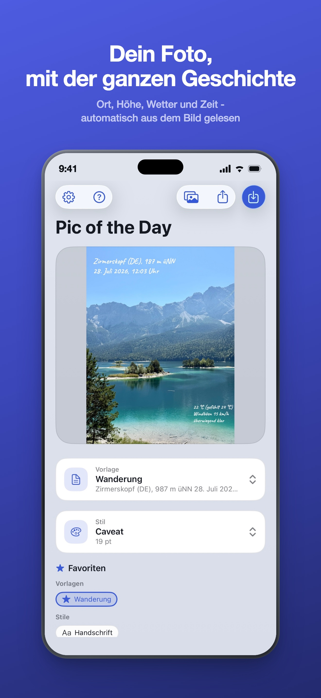
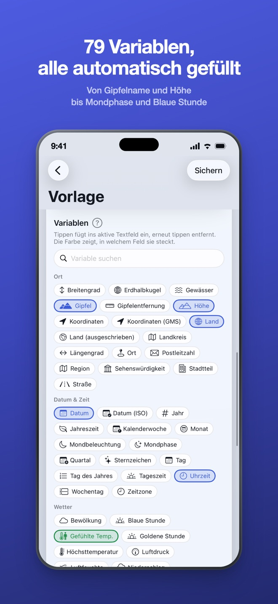
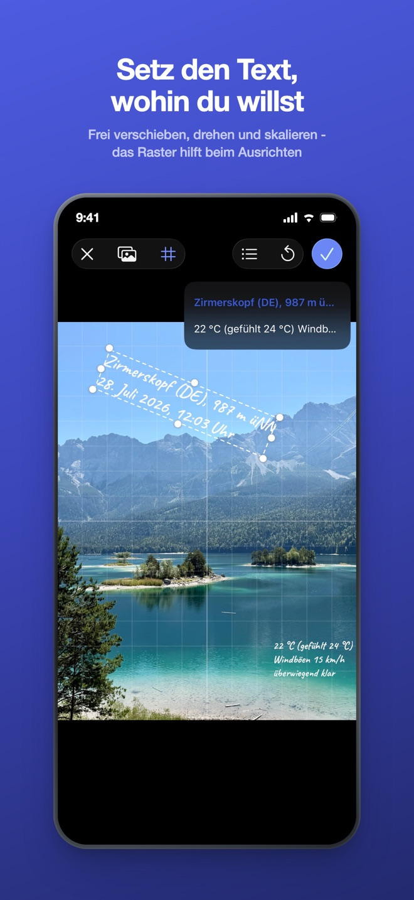
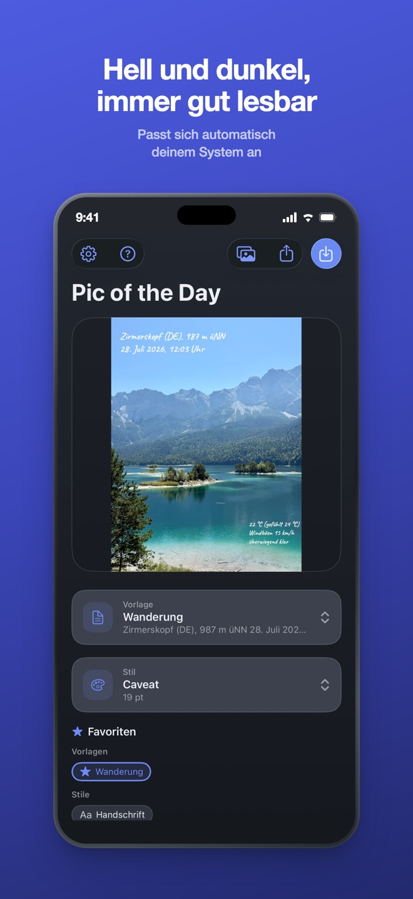

iPhone App
Jedes Foto weiß, wo du warst.
Aus einem Urlaubsschnappschuss wird eine Postkarte, die sich selbst beschriftet: Ort, Datum, Wetter, Höhe und Sonnenstand kommen direkt aus dem Foto.

Das schreibt die App - du tippst nichts
Lissabon (PT), 28 m üNN aus GPS- und Höhendaten 3. Oktober 2026, 18:41 Uhr, aus den Foto-Metadaten 24 °C, goldene Stunde Wetter zur Aufnahmezeit
Kostenlos, keine Werbung, kein Konto.
iPhone, ab iOS 17.
In zehn Sekunden zum beschrifteten Bild.
01
Foto wählen
Aus der Mediathek oder direkt in der App aufgenommen.
02
Vorlage wählen
Die App liest die Metadaten des Fotos und füllt Ort, Datum und Wetter selbständig ein.
03
Sichern
Das beschriftete Bild landet als neues Foto in deiner Mediathek.
Was dir die App abnimmt.
Vorlagen statt Tippen
Schreib den Text einmal mit Platzhaltern, danach füllt die App ihn für jedes Foto neu aus. 79 Felder stehen bereit: Adresse, Wetter zur Aufnahmezeit, Kameradaten, Mondphase, nächster Gipfel und noch vieles mehr.
Stile, die bleiben
Ein Stil, den du einmal einstellst und danach nie wieder anfasst. 135 Schriften und 22 Hintergrundformen liegen bei, alles offline auf dem Gerät.
Bis zu 20 Fotos am Stück
Der Stapelmodus holt für jedes Bild seine eigenen Daten, während der Stil für alle gleich bleibt. Ein Wandertag ist in einem Durchgang beschriftet.
Was du siehst, wird gespeichert
Im Vollbild-Editor sitzt jedes Textfeld genau da, wo du es hinschiebst, drehst und skalierst. Die Vorschau ist Pixel für Pixel das Ergebnis.



Deine Fotos bleiben auf deinem iPhone.
- Kein Upload. Bilder werden ausschließlich auf dem Gerät verarbeitet. Es gibt keinen Server, auf den sie gelangen könnten.
- Dein Original bleibt unberührt. Gesichert wird immer als neues Foto neben dem alten, nie darüber.
- Nur Koordinaten verlassen das Gerät, und auch das nur für Wetter, Ortsnamen und den nächsten Gipfel.
- Kein Konto, keine Tracker, keine Werbung. Beim Teilen lassen sich die GPS-Daten auf Wunsch vorher entfernen.
Bereit für dein erstes beschriftetes Foto?
Im App Store ladenKostenlos, keine Werbung, kein Konto. iPhone, ab iOS 17.